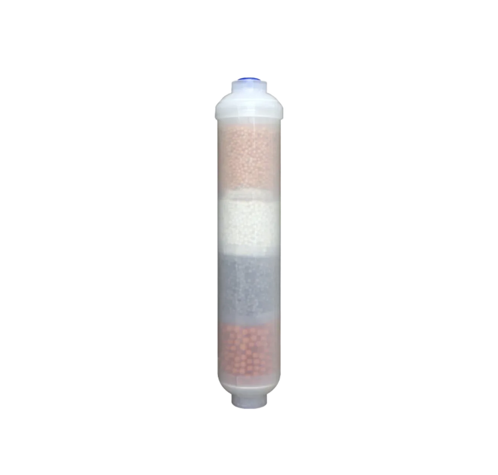
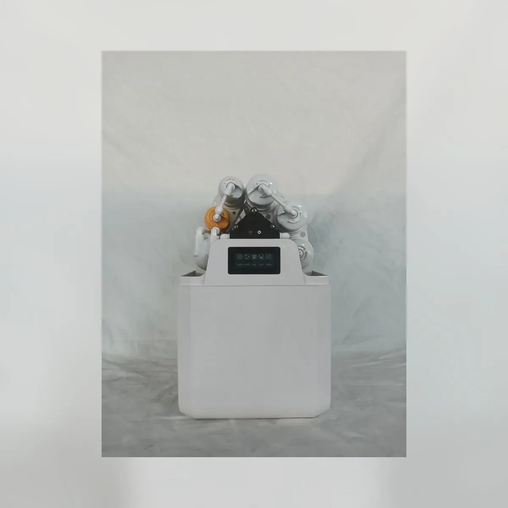

Lõi lọc than lắp trực tiếp trên đường ống T33
Lõi lọc lắp trực tiếp trên đường ống T33Bộ lọc than T33 dạng inline được định vị là bộ lọc than khối CTO cho các chương trình cung ứng máy lọc nước, máy cấp nước và bộ lọc sơ bộ. Khi lựa chọn, nên xác nhận vật liệu lọc than hoạt tính gáo dừa, cấp lọc tính bằng micron, kích thước lõi, độ sụt áp, khả năng lắp vừa vỏ lọc và quy cách đóng gói bộ lõi thay thế. Các thông số kỹ thuật chính bao gồm Vật liệu lọc: Than hoạt tính gáo dừa.
Lưu ý lựa chọn dành cho người mua
Bộ lọc than T33 dạng inline thường được so sánh theo cấp chất lượng của vật liệu lọc than, chất cần hấp phụ, cấp lọc tính bằng micron, chiều dài lõi, kiểu nắp và khả năng lắp vừa vỏ lọc. Đối với các chương trình cung ứng lõi lọc nước mang nhãn riêng, những thông tin hữu ích cho việc báo giá là thiết kế bao bì bọc lõi, cơ cấu các lõi trong bộ thay thế, ngôn ngữ trên thùng và quy cách đóng hàng trên pallet.
Các chi tiết cần xác nhận trước khi báo giá
- Cấp chất lượng vật liệu than, chỉ số iốt và vấn đề về vị cần xử lý
- Cấp độ lọc tính bằng micron, chiều dài, độ sụt áp và vỏ lọc tương thích
- Thiết kế nắp đầu, gioăng, lớp bọc và bộ lõi thay thế
- Thiết kế đồ họa cho nhãn hiệu riêng, ngôn ngữ trên thùng carton và kế hoạch đóng hàng trên pallet
Lưu ý dành cho người mua bộ lọc than T33 dạng inline
Đối với bộ lọc than T33 dạng inline, các trang về lõi lọc chuyên dụng cần nêu rõ giới hạn chức năng. Hãy mô tả vị trí lắp đặt lõi lọc, vật liệu lọc được sử dụng, cách lõi lọc hỗ trợ cải thiện vị nước hoặc bảo vệ hệ thống và những nội dung người mua phải xác nhận về khả năng tương thích.
Thông tin cần xác nhận
- Chức năng của vật liệu lọc và vị trí lắp đặt
- Kích thước đầu nối và ống tương thích
- Tuổi thọ sử dụng dự kiến và kế hoạch cho bộ lõi thay thế
- Nhu cầu về nhãn, bao bì và tài liệu cho thị trường
Thông số kỹ thuật
| Loại sản phẩm | Bộ lọc hậu than dạng inline |
|---|---|
| Vật liệu lọc | Than hoạt tính gáo dừa |
| Kiểu kết nối | Các tùy chọn đầu nối 1/4 inch dạng nối nhanh hoặc nối ren |
| Chức năng | Xử lý hoàn thiện vị và mùi ở công đoạn cuối |
| Ứng dụng | Hệ thống RO, máy cấp nước, máy nước uống trực tiếp |
| OEM/ODM | Phụ kiện nối, vật liệu lọc, nhãn, màu nắp và quy cách đóng gói |
Tính năng chính
- Cấu hình dựa trên bộ lọc than T33 dạng inline, kèm thông tin ứng dụng cụ thể cho từng mẫu sản phẩm.
- Việc đánh giá lõi lọc bao gồm vật liệu lọc, chiều dài, đường kính, nắp đầu, bộ phận làm kín và các vỏ lọc tương thích.
- Có thể chuẩn bị nhãn mang thương hiệu riêng, tài liệu hướng dẫn và thùng carton sau khi xác nhận mẫu.
- Nên xác nhận thị trường mục tiêu và điều kiện lắp đặt khi đặt hàng mẫu và đặt hàng số lượng lớn.
- Có thể điều chỉnh cách đóng gói chung nhiều sản phẩm, bọc màng co, nhãn và cách đóng gói bộ lõi thay thế theo nhu cầu của nhà phân phối.
Sản phẩm liên quan
Sản phẩm liên quan

Lõi lọc GAC / UDF
Lõi lọc than hoạt tính gáo dừa dạng hạt UDF đầu phẳng – Nắp đầu màu xanh dương — Cấu hình nhìn thấy được: Nắp đầu màu xanh dương.
Gửi yêu cầu
Lõi lọc than khối gáo dừa CTO
Lõi lọc than khối gáo dừa CTO — Chiều dài: 10 inch / 20 inch / tùy chỉnh.
Gửi yêu cầu
Máy lọc nước RO có bình áp tích hợp 100G/200G
Máy lọc nước RO có bình áp tích hợp 100G/200G — Bình chứa: Bình áp tích hợp.
Gửi yêu cầuYêu cầu báo giá bộ lọc than T33 dạng inline
Gửi số lượng, thị trường mục tiêu, ghi chú về cấu hình và yêu cầu đóng gói cho bộ lọc than T33 dạng inline. Yuchen Water sẽ xác nhận các tùy chọn phù hợp, phụ kiện và thông tin xuất khẩu trước khi báo giá.